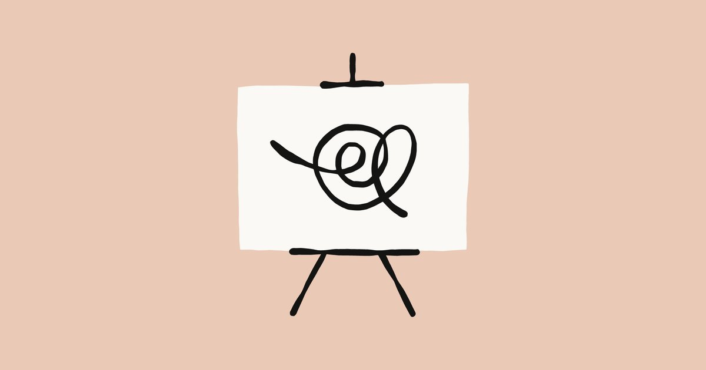
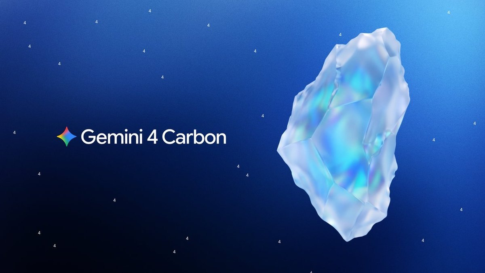

AI
Brief
Tuesday edition
Anthropic turns Claude into a workplace suite
Also: Google prices its strongest Gemini like its mid-tier model, brands get verified agents in ChatGPT, Kiro hands routine approvals to a model, and IBM and Microsoft bundle agents with engineers.
What matters today

Claude becomes a work suite
Anthropic launches Claude Sheets, Whiteboards and Data.
- Stage: Sheets and Whiteboards in beta on paid plans; Claude Data, formerly Dashboards, is generally available.
- Meetings: Claude Meetings, a Team and Enterprise beta, joins Google Meet calls as a visible participant and drafts the plan live.
- Apps: interactive connectors open tools like Confluence and Notion in full beside the chat, for Claude to edit with you.
Why it mattersClaude stops being a tab beside the work and becomes where work happens. The contest is now for the default work surface that Microsoft 365 and Google Workspace hold.

Gemini 4 Carbon for all
Google releases Gemini 4 Carbon broadly.
- Available now in the API at $2 input and $10 output per million tokens, Argon's introductory price; rolling out to AI Ultra subscribers.
- /swarm: a preview in Antigravity that turns one prompt into a team of agents, Carbon planning and auditing. Google's figures: first on CursorBench 4.0, over 2X cheaper per task.
Why it mattersGoogle sells its top model at mid-tier prices and ships the orchestration with it. Multi-agent work becomes a product feature, and cost per finished task becomes the number to beat.
Brands get agents in ChatGPT
OpenAI brings verified business agents into ChatGPT.
- Beta: in Business Hub, verified companies update listings, add product feeds with prices and see mentions and discovery topics; Shopify stores connect directly.
- Business Agents: live for eligible US e-commerce and online service firms, in a labeled chat. Brands can make their agent the landing spot for ChatGPT Ads.
Why it mattersChatGPT moves from referrer to storefront, and paid clicks now land on a brand's agent, not its website. OpenAI decides who gets verified and where they appear.
A model approves the agent
Kiro lets a model approve its agent's routine actions.
- Available now in Kiro IDE, CLI and Web: for actions outside your rules, an LLM review approves routine ones, blocks unsafe ones and asks you when unsure.
- Amazon's data: Kiro asked before 15.8% of tool calls and users approved 97.1%; 13.4% of sessions started with every tool trusted.
Why it mattersPrompts that get approved 97% of the time train people to switch safety off. A reviewer model in the loop becomes standard agent plumbing, and its judgment becomes the real security boundary.
Agents sold with engineers
IBM and Microsoft announce Imagine Enterprise.
- Announced: a platform to build, run and govern industry agents, starting from IBM Consulting's 6,000-plus pre-built agents and assets on Microsoft's stack.
- Delivery: forward-deployed engineers from both companies for qualifying engagements; aimed at regulated industries.
Why it mattersIn regulated industries the agent platform now comes with a catalog and a crew. Buyers pay for ready-made agents and people to install them, a higher bar for vendors selling a bare toolkit.
Also in AI today
- Microsoft 365 Copilot Chat: users can limit an answer to the content sources they pick, including connected third-party sources; on by default, worldwide from mid-November.
- Google Chat: Gemini spots a request to meet in chats of up to five people and offers up to three times from Calendar; extended rollout from November 9.
- Gemini in Gmail: thread summaries and Help me write now reach all Workspace users 18 and older.
- Agentforce Coworker AI Skills: generally available; describe a task once and anyone it is shared with runs it the same way, in Salesforce, Teams or mobile.
- Adobe MCP: outside agents such as ChatGPT will edit native Photoshop, Illustrator, Premiere and After Effects files locally; private beta in early 2027.
- Adobe and Google: PDF editing comes to Drive and Adobe AI to Gemini, while Google's models come to more Adobe apps.
- Cursor Projects: now multiplayer; teammates share one workspace with their agents, a shared context layer and a task board linking each task to its PR.
- Nvidia OpenShell: its open runtime for securing and governing autonomous agents becomes a CNCF Sandbox project; Nvidia also joins Google-led Agent Substrate for long-running agents.
- AgentCore Web Search API: generally available; one call returns ranked results from an Amazon-operated web index, filterable by domain and publication time.
- Grok Build: researchers found its share links can be enumerated, exposing data from thousands of users' apps, some of it SpaceXSI's own.
- ChatGPT voice: Advanced and Standard Voice retire on December 11, 2026, as ChatGPT focuses on GPT-Live.
- OpenAI and Upwork research: demand for freelance work is shifting toward new skill combinations, with larger budgets and more hours for AI-related projects.
- OpenAI hires Odessia: the AI travel agent's founder joins to work on travel; the product has shut down; terms not disclosed.
- Anthropic IPO: roadshow launched at $70 to $78 a share, to list as ANT; an amended filing says it has met its AI R&D safety threshold, based on expected models.
- New York RAISE Act: registration opened; large frontier developers must register by January 1, 2027 and report critical safety incidents within 72 hours.
- Canada (November 9): signs the Paris call for AI safety and security with five other countries and 10 AI companies, including Cohere.